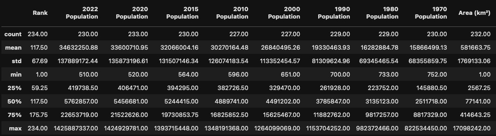
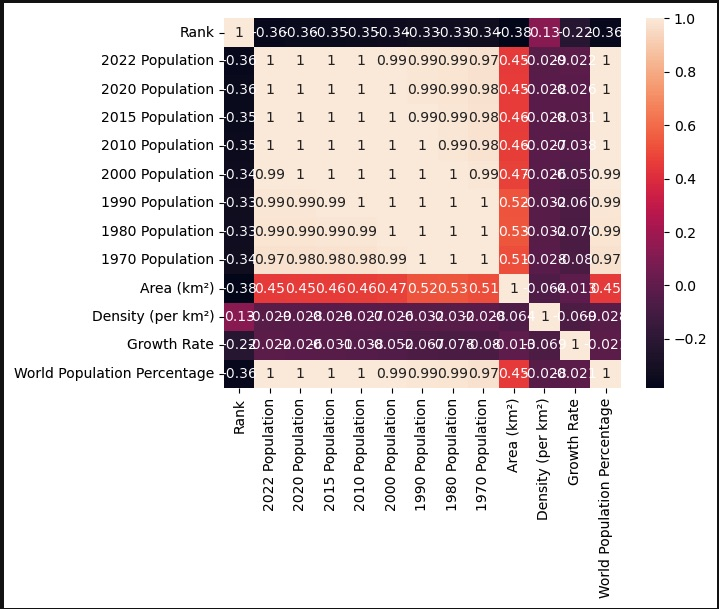
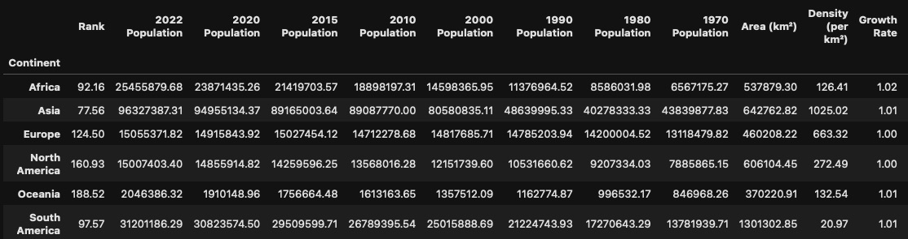
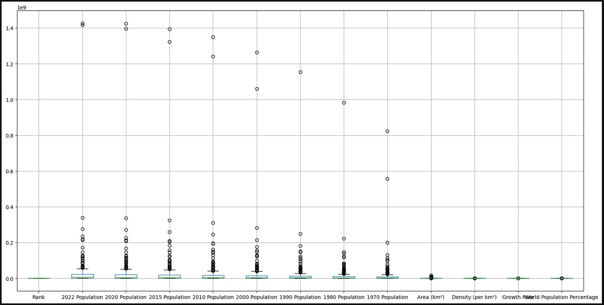

EXPLORATORY DATA ANALYSIS -
Global Population Data
Data Set: Press Here
GitHub File: Press Here
Overview:
This project focuses on exploring and analysing global population data using Python. By applying key exploratory data analysis (EDA) techniques, the project provides insights into population trends by year, continent, and world population percentage. The visualisations offer an understanding of the dataset, useful for population studies and trends over time.
Key Skills Used:
• Pandas: DataFrame manipulation and transformation
• Seaborn & Matplotlib: Data visualisation techniques like heatmaps and line charts
• Data Cleaning & Transformation: Handling null values, removing duplicates, splitting columns
• Data Correlation: Calculating and visualising correlation matrices for deeper insights
Code Description:
The code uses the Pandas library to load, clean, and analyse world population data. It performs several operations, including removing duplicates, calculating correlation matrices, grouping by continent, and visualising population growth trends. The outputs help uncover insights into population distributions and growth over time.
Why This Project is Worth Doing:
• This project highlights the importance of using Python for data analysis, particularly for large datasets.
• It demonstrates how visualisations can provide clear insights into global population trends, essential for reporting.
• The steps involved in cleaning and transforming data are key tasks for any data analyst.
Step-by-Step Guide for EDA:
1. Data: The CSV file is loaded into a Pandas DataFrame.
2. Data Cleaning: Remove duplicates and handle missing values.
3. Visualise Data: Plot correlation matrices and population growth trends using Seaborn and Matplotlib.
4. Grouping by Continent: Analyse population data grouped by continent.
Visual Output Examples:
Summary statistics for populations across different years:

Heatmap showing correlations between numeric features:

Population data grouped by continent:

Box Plot chart showing the various metrics:

CONCLUDING REMARKS
This project deepened my understanding of how to apply Exploratory Data Analysis (EDA) techniques using Python, particularly through the use of Pandas for data manipulation, Seaborn and Matplotlib for visualisations. Working with global population data provided insights into how to uncover trends, patterns, and relationships within datasets. I developed the ability to clean and transform data, handle missing values, and create meaningful visualisations that guide decision-making. These skills are fundamental for any data analyst aiming to extract actionable insights from complex datasets, and this project has significantly improved my ability to present data in a clear and concise manner.